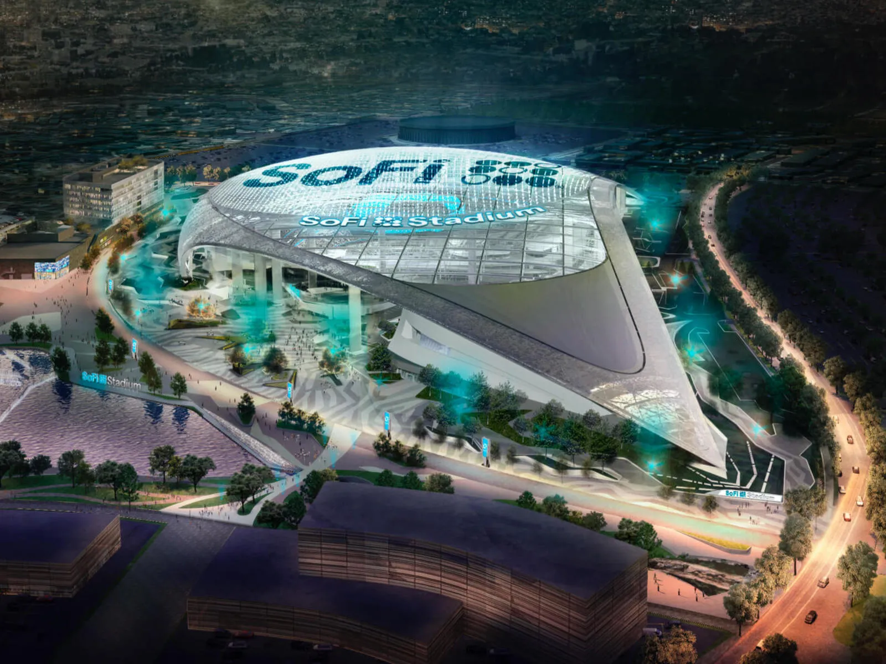
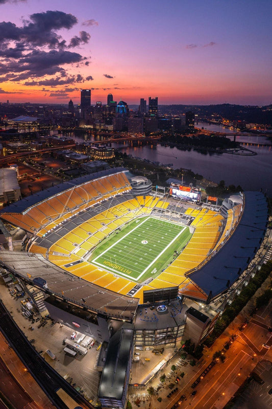
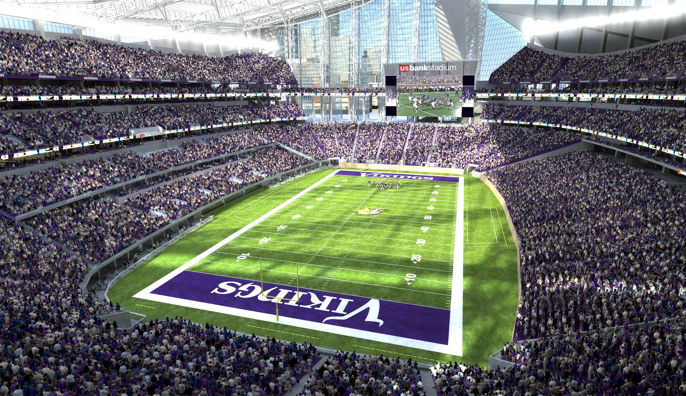

- Madden NFL cover
- Madden NFL coverThis is a webpage a bout my favorite game; Madden NFL
Madden NFL (known as John Madden Football until 1993) is an American football sports video game series developed by EA Orlando for EA Sports. The franchise, named after Pro Football Hall of Fame coach and commentator John Madden, has sold more than 130 million copies as of 2018.[1] From 2004 until 2022, it was the only officially licensed National Football League (NFL) video game series, and has influenced many players and coaches of the physical sport. Among the series' features are detailed playbooks and player statistics and voice commentary in the style of a real NFL television broadcast. As of 2013 the franchise has generated over $4 billion in sales, making it one of the most profitable video game franchises on the market. Electronic Arts (EA) founder Trip Hawkins conceived the series and approached Madden in 1984 for his endorsement and expertise. Because of Madden's insistence that the game be as realistic as possible, the first version of John Madden Football did not appear until 1988. EA has released annual versions since 1990, and the series' name changed to Madden NFL in 1993 after EA acquired the rights to use NFL teams and players. Although Madden died in 2021, the game continues to bear his name as a result of a 2005 agreement which gives EA the right to use his name and likeness in perpetuity. Madden's estate continues to receive royalties pursuant to this agreement. (wikipedia)
In my spare time I like to ply Madden on my xbox. I play it almost everyday and im really good at it. I first started playing madden around 5 years ago and ever sense I've loved the game. I play with my friends or sometimes ill ply online against randoms. There are a few different game modes on madden but my favorite that I play the most is Head 2 Head.
- Madden NFL coverThe only yardstick for success our society has is being a champion.
| Hard Rock Stadium | Miami Dolphins |  |
|---|---|---|
| Lumen Field | Seattle Seahawks |  |
| Bank of America Stadium | Carolina Panthers |  |
| Sofi Stadium | Los angelos Chargers/Rams |  |
| Acrisure Stadium | Pittsburgh Steelers |  |
| US Bank Stadium | Minnesota Vikings |  |
Email: Evan7@gmail.com
Phone: 812-267-8511